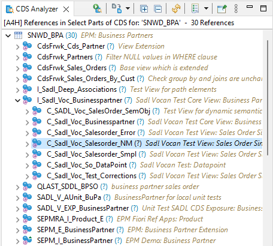
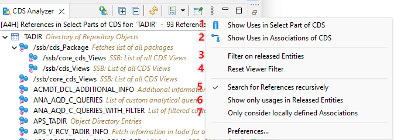
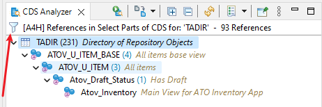

The Where-Used Analysis provides a way to display all usages
of a CDS View (or Database Table/View) in either the SELECT
Part or as Associations in other CDS Views.

Example of Where-Used Analysis
There are several options which you can use to control the
analysis:

Options in Where-Used Analysis
This setting controls whether Uses in SELECT-Parts of
a CDS View will be shown
This setting controls whether Uses as Associations of
a CDS View will be shown
This toggles a local Tree Filter and shows only the sub trees where a released entity is available
This feature is only available starting from NW
7.50
Resets a currently active Viewer Filter
Toggles visibility of the Text Filter Control
If active the analysis is searching not only the direct references, but resolve all subsequent references in
one step
If this setting is checked only referenced CDS Views which
have an API state of type Released will be shown
This feature is only available starting from NW
7.50
This setting is only relevant if the setting Show Uses
in Associations of CDS is active. If checked, the usage is only
valid if the association to the triggering CDS View is defined
locally (i.e. not propagated)
This feature is only available starting from NW
7.52
Local Viewer Filter
Additionally you can restrict the result to show only a certain sub tree.
Filter on Selected Node
After the filter was applied you see an icon to indicate that the tree is now filtered.

Locally filtered subtree
The local filters can be resetted via the action Reset Viewer Filter from the View Menu.
Text Filter
The view also provides the option to filter the results with a Text Filter, which can be activated via the View
Menu
or the Shortcut Strg+F